ЗАМЕТКИ О СЛОЖНЫХ ЗАДАЧАХ
Большие заметки от человека, который сам делает работу. Каждая статья заканчивается тем, что можно применить, а не списком «вопросов к обсуждению».
12 статей · 106 минут чтения
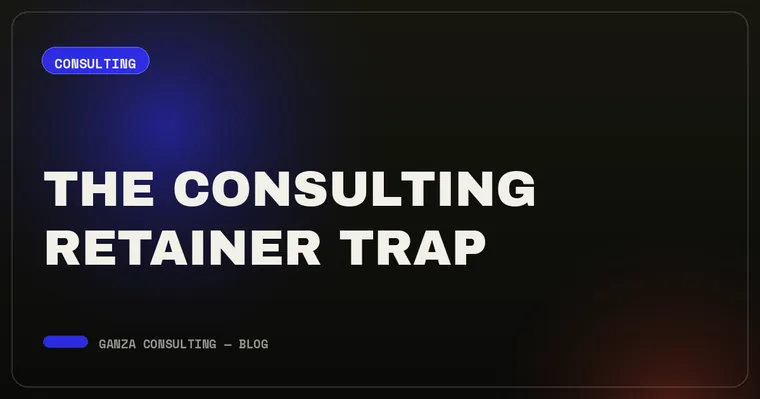
Ловушка консалтингового ретейнера: почему абонентка редко решает настоящую задачу
Ретейнер гарантирует, что консультант получает деньги каждый месяц. Он не гарантирует, что сложная задача будет решена, — и эта разница накапливается незаметно.
ЧИТАТЬ СТАТЬЮ →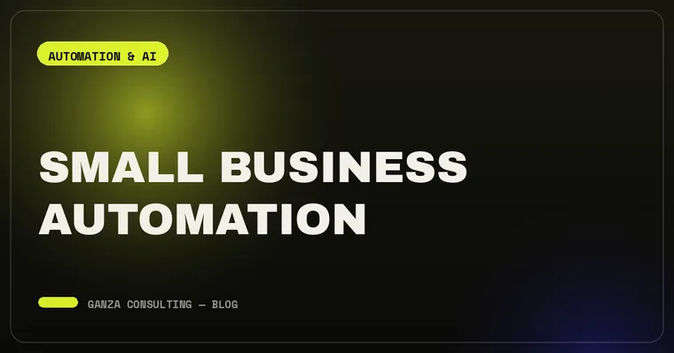
Автоматизация малого бизнеса: что автоматизировать первым, а что не трогать
Способ расставить приоритеты за двадцать минут, пять автоматизаций, которые стабильно окупаются в небольших командах, и стоимость поддержки, которую никто не закладывает.
ЧИТАТЬ СТАТЬЮ →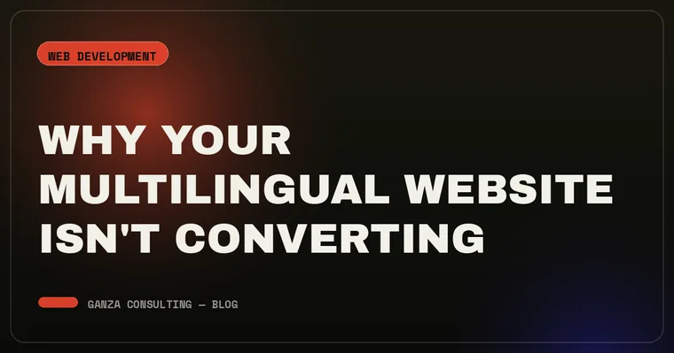
Почему многоязычный сайт не конвертирует (дело не в переводе)
Перевод — простые 20% локализации. Оставшиеся 80%, которые решают, конвертирует ли сайт, к словам почти не относятся.
ЧИТАТЬ СТАТЬЮ →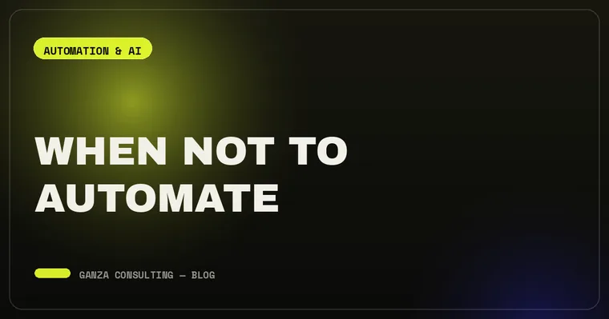
Когда не нужно автоматизировать: скрытый риск автоматизации сломанных процессов
Автоматизация сломанного процесса его не чинит. Она заставляет сломанную версию работать быстрее, стабильнее и гораздо незаметнее.
ЧИТАТЬ СТАТЬЮ →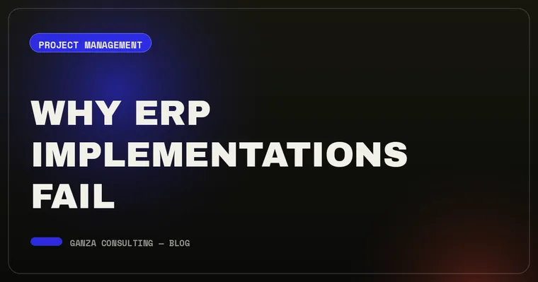
Почему проваливаются внедрения ERP: 7 сценариев отказа и ранний сигнал каждого
У публично задокументированных катастроф общий небольшой набор механизмов. Каждый подаёт конкретный сигнал за месяцы до списания — если кто-то за ним следит.
ЧИТАТЬ СТАТЬЮ →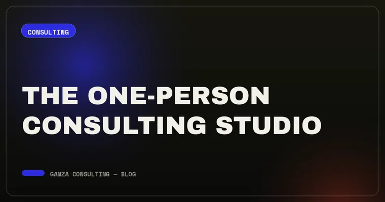
Студия из одного человека: когда маленький подрядчик лучше большого — и когда нет
«А если вы заболеете?» — стандартное возражение против консультанта-одиночки. Вопрос честный — и обычно направлен не на тот риск.
ЧИТАТЬ СТАТЬЮ →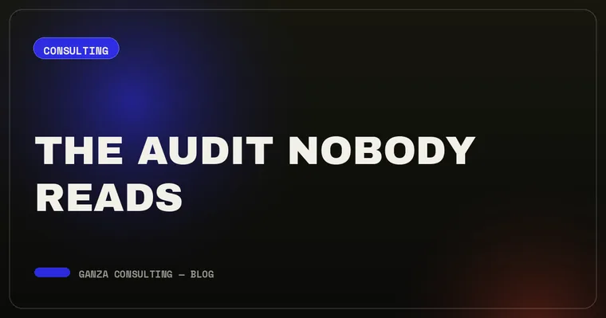
Аудит, который никто не читает: почему отчёты не меняют бизнес
Большинство аудитов спроектированы, чтобы продемонстрировать основательность, а не чтобы их применили. Это проблема проектирования, а не точности — и решается она в техзадании.
ЧИТАТЬ СТАТЬЮ →Как выбрать бизнес-консультанта: 9 вопросов, отделяющих экспертизу от красивой презентации
Выбор обычно проваливается в первом разговоре, а не на исполнении. Эти девять вопросов за полчаса вскрывают то, на что у отзывов уходят недели.
ЧИТАТЬ СТАТЬЮ →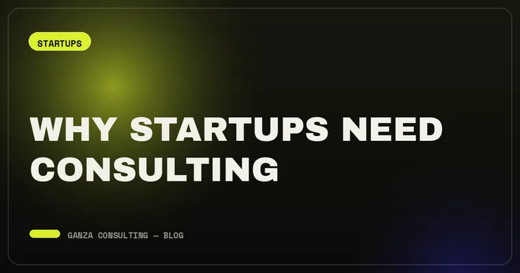
Зачем стартапу консалтинг, даже если кажется, что денег на него нет
Консалтинг нужен не тем, кто достаточно велик, чтобы позволить себе медлительность. Он полезнее всего тем, кто слишком мал, чтобы позволить себе ошибку.
ЧИТАТЬ СТАТЬЮ →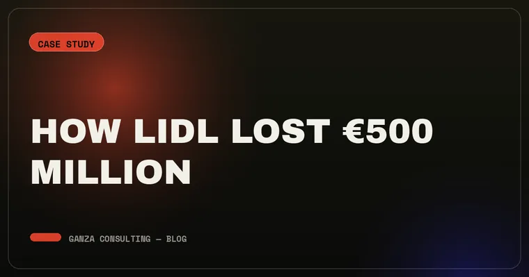
Как Lidl потерял €500 млн: разбор провала цифровой трансформации
Проект eLWIS не провалился в один момент. Он уезжал в сторону семь лет — пока поддерживать его не стало дороже, чем признать мёртвым.
ЧИТАТЬ СТАТЬЮ →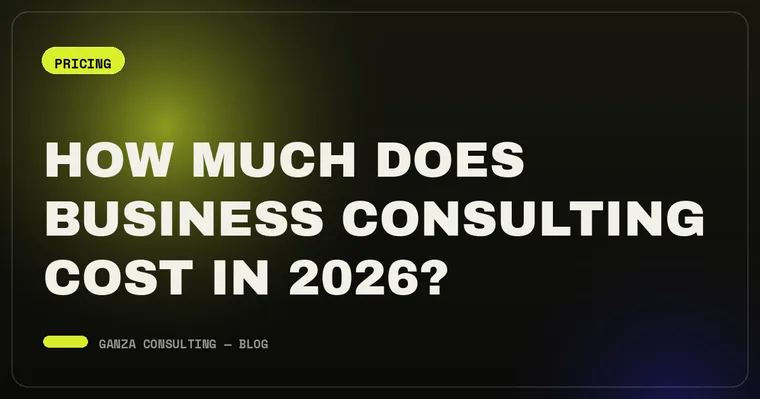
Сколько стоит бизнес-консалтинг в 2026 году: ставки, модели оплаты и из чего складывается цена
Публикуемые вилки ставок настолько широки, что сами по себе бесполезны. Значение имеет модель оплаты и семь факторов, которые реально двигают ваше предложение.
ЧИТАТЬ СТАТЬЮ →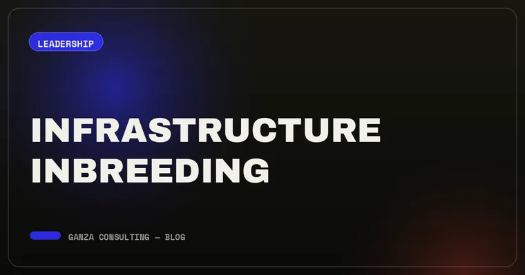
Инфраструктурный инбридинг: почему повышать только своих — риск для компании
У университетов есть название для найма только своих выпускников. У компаний та же проблема — просто без названия, поэтому ей никто не управляет.
ЧИТАТЬ СТАТЬЮ →